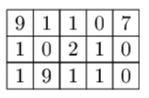
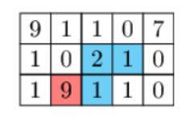

题目
您将获得一个由 N 行和 M 列组成的板。电路板的每个字段（其实就是数组中的一个坐标点，作者注）都包含一个数字 (0-9)。
您希望查找由四个相邻字段组成的路径。如果两个字段共享一个共同点，则它们是相邻的。此外，路径中的字段应该是不同的（不能两次访问同一字段）。
路径的四位数字（按您访问它们的顺序）创建一个 整数。通过这种方式可以实现的最大整数是多少?
编写函数
int solution (int[][] board) ; |
给定表示为由 N 行和 M 列组成的整数矩阵的板，则返回在长度为 4 的路径中连接值时可以实现的最大整数。
例子：给定以下板（N=3, M=5） :

该函数应返回9121。您可以选择以下路径（第一 个字段用红色表示)：

解
知道用回溯或者BFS，但是代码写不出来。😓